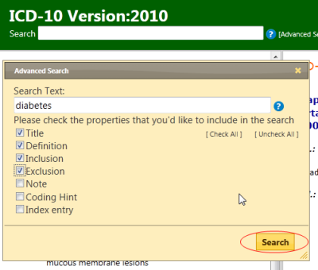
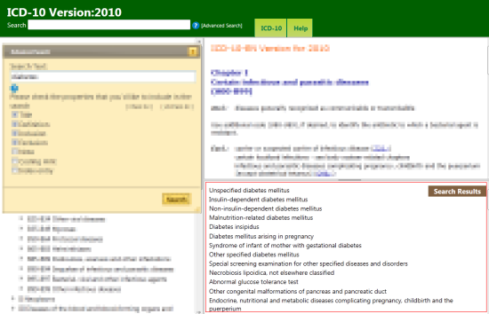

Advanced search lets you search selected properties of the classification. You could search all properties or a selected subset only
First, you need to provide keywords in the Search Text field then check the properties that you'd like to include in the search.
The system will search for the keywords in the properties that you've checked and rank the results similar to a search engine
The results will be displayed in the Search Results pane. If the search query hits more than 200 results, then only the top 200 will be displayed.
If you provide more than one keyword, the system will search for items that have all the keywords.
Wildcards: You may also use wildcard character * . see examples below.
OR operator : It's possible to have the results that have either one or another keyword. Please see the example 4.
Examples:
1. Search Text: diabetes {finds all that have the word "diabetes" in the searched fields}
2. Search Text: diabet* {finds all that have a word that start with "diabet" }
3. Search Text: diabet* mellitus {finds all that have a word that starts with "diabet" and also contains the word "mellitus"}
4. Search Text: tubercul* (lung OR larynx) { finds all that have a word that starts with "tubercul" and than has either lung OR larynx in it

After the search the results are displayed at the lower right area of the screen. Here the porgram lists the titles of the ICD categories in which your search keywords are found.
Clicking on any result will take you to that category
You may close the advanced search window by clicking the X at the top left corner of the window.
The search results pane can be resized by dragging the horizontal line above it